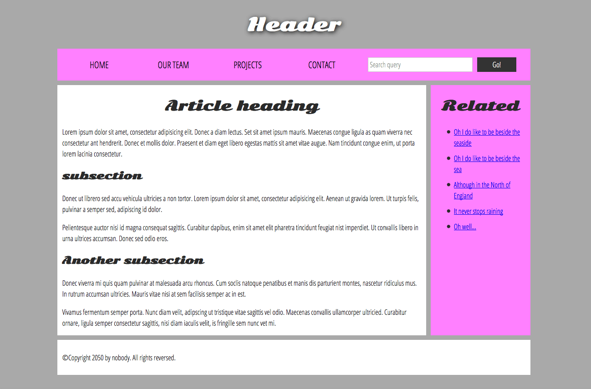

En este html creado sera usado como libreta de los conceptos basicos. Estoy siguendo los manuales de la siguiente fuente
Developer Mozilla
Anatomia de un elemento de HTML

El elemento lo conforman la etiqueta de apertura, seguida del contenido, seguido de la etiqueta de cierre
Elemento anidado
Se pueden anidar dos elementos para destacar una frase o algun item dentro de la etiqueta, Se demostrara en la siguiente oracion
Mi gato es Muy jugueton
Recordar cerrar los elementos correctamente en este caso por ejemplo tenemos que cerrar el elemento strong ya que esta dentro de la etiqueta parrafo (p), no llevar a cabo esta practica puede derivar a errores
Los elementos tambien pueden tener atributos. Los atrubutos tiene el siguinte aspecto

El atributo class asigna al elemento un indentificados que se puede utilizar para dotarlo de informacion de estilo
Elemento Ancla
El elemento a que significa Ancla. Puede convertir el texto que encierra en un hipervinculo. Las anclas pueden tener varios atributos:
href: El valor de este atributo indica la direccion web a la que se quiere que apunte el enlace
title: Añade infotmacion adicional sobre el enlace, como puede ser el titulo de la pagina que vinculas
target: especifica el contexto de navegacion que va a usar para mostrar el enlace. Por ejemplo, target="_blank" abrira el enlace en una nueva pestaña
ejercicio:
1.Añade el elemento a.
2.Añade el atributo href y el atributo title.
Especifica el atributo target para abrir el enlace en una nueva pestaña
Practicas HMTL CSS
Fundamentos de texto HTML
La mayor parte del texto estructurado esta compuesto por encabezados y parrafo, independientemente de si lees una historia, un periodico, un libro de texto, una revista, etc.
Como establecer la estructura jerarquica
Por ejemplo, en esta historia, h1 representa el titulo de la historia. h2 representa el titulo de cada capitulo y h3 las diferentes secciones del capitulo, y asi sucesuvamente
Ejemplo:
El agujero aplastante
Por Chris Mills
Capitulo 1: la noche oscura
Era una noche oscura. En algun lugar, un buho....
Capitulo 2: el silencio eterno
nuestor protagonista ni susurrar puedo al ver esa sombria figura...
El espectro habla
Habian pasado varias horas mas...
Apredizaje Activo
Listas
Las listas no ordenadas se usan para marcar listas de artículos cuyo orden no es importante. Tomemos como ejemplo una lista de compras:
Las listas ordenadas son aquellas en las que el orden de los elementos sí importa. Tomemos como ejemplo una lista de instrucciones para seguir un itinerario:
- Conduce hasta el final de la calle
- Gira a la derecha
- Sigue derecho por las dos primeras glorietas
- Gira a la izquierda en la tercer glorieta
- El colegio está a tu derecha, 300 metros más adelante
Marca la pagina de tu receta
Enfasis e importancia
En HTML si queremos destacar una palabra para una mejor compresion de nuestro documento tenemos varias etiquetas a nuestra disposicion.
No deben utilizarse para solamente establecer el estilo que tienen por defecto esta letra, tienen que usarse correctamente y en los casos donde son requeridos. Si es el caso de que te gusta el estilo de la etiqueta pero no existe el cotexto para usarla debes usar la etiqueta span y algo de CSS u otra etiqueta...
Ejemplo emphasis
Me alegro de que no llegues tarde.
Usamos la etiqueta em(emphasis) para dotar a la frase mas cotexto.
Ejemplo negrita
Para enfatizar palabras importantes al hablar solemos acentuarlas, y al escribir lo hacemos en estilo negrita
Cuento contigo. ¡No llegues tarde!
Puesdes anidar elementos de enfasis dentro de elementos de importacia y viceversa si lo deseas:
Este liquido es Altamente toxico - si lo bebes, podrias morir.
Enlaces
Unos de los atributos anclas es el atributo de title. El titulo contiene informacion adicional sobre el enlace.
Crea un enlace a Google Argentina!
El altributo title sera visible si colocamos el cursor sobre el enlace!
Enlace mediante imagen
Fragmentos de documento
Es posible apuntar hacia una parte concreta de un documento HTML en vez de a todo un documento. Para ello hay que asignar previamente un atributo id al elemento hacia el que apuntamos. Esto se debe hacer en el encavezado y quedaria asi:
Para hacer referencia al elemento con id creado, lo añadiremos al final de la URL precedido por un almohadilla
¿quieres saber mi direccion? Aqui la tienes Direccion
Tambien podemos usar esta referencia a un fragmento de documento para apuntar hacia otra parte del mismo documento:
Perdido? Ve al comienzo del documento!
URLs absolutas y relativas
URL absoluta: Hace referencia a una dirección definida por su ubicación absoluta en la web, esta incluye el protocolo y el nombre del dominio.
URL relativa:Hace referencia a una dirección que depende de la posición del archivo desde donde se utiliza — son las que vimos en la sección anterior.
Indica claramente los recursos no HTML
Cuando damos referencias a recursos para descargarlos (como documentos en formato PDF o Word) o para reproducirlos (como archivos de audio o vídeo) o que tengan un efecto inesperado (una ventana emergente) hay que indicarlo para no confundir al usuario.
Ejemplos:
Descarga el informe de ventas (PDF, 10MB)
reproduce el video (el flujo de datos se abre en un pestaña independiente, calidad HD)
Juega al juego del automovil(requiere Flash)
Utiliza el atributo download
Descarga la ultima version de firefox para windows (64 bits) (español, es-MX)
Apredisaje activo: crear una menu de navegacion
Link donde fue realizado el ejercicio
Enlace a correo electronico
Es posible crear enlaces o botones que, cuando se pulsan, abren un nuevo correo saliente en lugar de enlazar a un recurso o página. Esto se consigue con el elemento ancla y el elemento mailto: seguido del esquema de la URL.
Enviar un correo electronico a ninguna parte
Ademas del correo electronico puedes proporcionar otra informacion. puedes incluir cualquier campo estandar contenido en el encabezado de cualquier mensaje en la URL mailto que proporciones. Los mas utilizados son el subject(asunto) cc(con copia a) o bcc(copia oculta), y body(permite especificar un mensaje breve oara el nuevo correo electronico.)
Enviar un correo electronico cc, bcc, asunto y cuerpo
Practica de enlaces
Partes basicas de un documento
Encabezado: Normalmente formado por un gran franja que cruza la parte superior de la pagina con un gran titulo, un logotipo y quizas un lema. Esta parte suele permanecer invarianble mientras navegas entro las paginas de un mismo sitio web.
Barra de navegacion: Son los enlaces a las secciones principales del sitio web. Normalmente esta formada por un menu con botones, enlaces o pestañas. Al igual que el encabezado, este contenido suele permanecer invariable en las diferentes paginas del sitio; tener un menu inconsistente en tu pagina web conducira a los usuarios a la confusion y frustacion. Puedes tener el encabezado y la barra de navegacion en un mismo elemento pero mantener los componentes separado es mejor por motivos de accesibilidad porque los lectores de pantalla pueden leer mejor ambos elementos si estan separados.
Contenido principal: Es la gran parte central de la pagina y contiene la mayor parte del contenido particular de una pagina web concreta; por ejemplo, el video que quieres ver, la narracion que quieres leer, el mapa que quieres consultar, los titulares de las noticias, etc. ¡Esta es la parte que definiticamente debe variar mucho de una pagina a otro de tu sitio web!
Barra lateral: Suele incluir algun tipo de informacion adicional, enlaces, citas, publicidad, etc. Normalmente esta relacionada con el contenido principal de la pagina (por ejemplo, en una pagina de noticias, la barra lateral podria contener la biografia del autor o enlaces a articulos relacionados), pero en otras ocasiones encontraras elementos recurrentes como un menu de navegacion secundario.
pie de pagina: Es la parte inferior de la pagina, que generalmente contiene la letra pequeña, el copyright o la informacion de contacto. Es el sitio donde se coloca la informacion comun(al igual que en el encabezado), pero esta informacion no suele ser tan importante o es secundaria con el respecto a la pagina en si misma. El pie tambien se suele usar para propositos SEO, e incluye enlaces de acceso rapido al contenido mas popular.
Una pagina web tipica se podria parecer a esta:

HTML dispone de etiquetas edecuadas que puedes usar para establecer estas secciones semanticas, por ejemplo;
- encabezado: header
- menu de navegacion: nav
- contenido principal: main, con varias subsecciones (ademas de la barra lateral) representadas por los elementos article, section, y div
- barra lateral: aside; a menudo colocada dentro de main
- pie de pagina: footer
Ejemplo de un esquleto web HTML|
CSS
Funciones
No vamos a escribir cosas basicas de CSS en cambio nos adentraremos en las funciones CSS.
Si bien la mayoría de valores son palabras clave relativamente simples o valores numéricos, es posible que algunos valores tomen la forma de una función. Un ejemplo sería la función calc(). Esta función te permite hacer operaciones matemáticas sencillas desde tu CSS, por ejemplo:
La caja interior es del 90% - 30px.
Una función consta del nombre de la función y, a continuación, unos paréntesis entre los que se colocan los valores permitidos para esa función.
otro ejemplo serian los diversos valores para transform, como rotate()
@rules
dan al CSS algunas instrucciones sobre cómo comportarse. Algunas @rules son simples, con el nombre de la regla y un valor. Por ejemplo, para importar una hoja de estilo adicional a tu hoja de estilo CSS principal, puedes usar @import:
Una de las @rules más comunes con las que te encontrarás es @media, que permite usar consultas a medios para aplicar CSS solo cuando se dan ciertas condiciones (por ejemplo, cuando la resolución de la pantalla supera un valor determinado o la anchura supera un valor concreto).
Prueba hacer mas chica laventana ?)
Practicas CSS
El modelo de caja
Todo en CSS tiene una caja alrededor, y comprender estas cajas es clave para poder crear diseños con CSS o para alinear elementos con otros elementos
En CSS, en general, hay dos tipos de cajas: cajas en bloque y cajas en linea.
Si una caja se define como un bloque, se comportara de las maneras siguientes:
- La caja fuerza un salto de linea al llegar al final de la linea.
- La caja se extendera en la direccion de la linea para llenar todo el espacio disponible que haya en su contenedor. En la mayoria de los casos, esto significa que la caja sera tan ancha como su contenedor, y llenara el 100% del espacio disponible.
- Se respetan las propiedades de width y height/li>
- El relleno, el margen y el borde mantienen a los otros elementos alejados de la caja.
elementos como h1, o usan por defecto block como tipo de visualizacion externa.
Si una caja tiene una visualizacion externa de tipo inline, entonces:
- La caja no fuerza ningun salto de linea al llegar al final de la linea.
- Las propiedades width y height no se aplican.
- Se aplican relleno, margen y bordes verticales, pero no se mantienen alejadas otras cajas en linea.
- Se aplican relleno, margen y bordes horizontales, y mantiene alejadas otras cajas en linea.
El elemento a, que se utiliza para los enlaces, y los elementos span, em y strong son ejemplos de elementos que se muestran en la linea por defecto.
El tipo de caja que se aplica a un elemento esta definido por los valores de propiedad display como block y inline, y se relaciona con el valor externo (outer) de visualizacion (display)
Tipos de visualizacion interna y externa
las cajas en CSS tienen un tipo de visualización externa, que define si se trata de una caja en bloque o en línea.
Sin embargo, las cajas también tienen un tipo de visualización interna, que determina cómo se disponen los elementos dentro de esa caja. De forma predeterminada, los elementos dentro de una caja se presentan en flujo normal, lo que significa que se comportan como otros elementos de tipo en bloque o en línea
Sin embargo, podemos cambiar el tipo de visualización interna utilizando valores de display, como flex. Si en un elemento establecemos display: flex;, el tipo de visualización externa es de tipo bloque (block), pero el tipo de visualización interna cambia a flexible (flex). Cualquier elemento que sea hijo directo de esta caja pasará a comportarse como un elemento de tipo flex, de acuerdo con las reglas que se establecen en la especificación de Flexbox
Ejemplos de diferentes tipos de visualizacion
A continuacion tenemos tres elementos HTML diferentes, todos con visualizacion externa de tipo block. El primero es un parrafo, que tiene un borde añadido con CSS. El navegador representa esto como una caja en bloque, por lo que el parrafo comienza en una linea nueva y se expande por todo el ancho disponible.
El segundo es una lista, que se presenta usando display: flex. Esto establece una disposicion flexible para los elementos que estan dentro del contenedor; sin embargo, la lista en si misma es una caja que se comporta en bloque y, como el parrafo, se expando por todo el ancho del contenedor y fuerza un salto de linea al llegar al final de linea.
Debajo hay un parrafo a nivel de bloque, dentro de cual hay dos elementos span. Estos elementos normalmente seria de tipo inline; sim e,bargo, uno de los elementos tiene una clase de bloque, y lo hemos establecido como display: block.
soy un parrafo. uno chiquito
- Item One
- Item Two
- Item Three
Yo soy otro parrafo. Algunas de las palabras que han sido envueltas en un elemento span.
Podemos ver como se comportan los elementos inline en el ejemplo siguiente. los elementos span del primer parrafo estan inline de manera predeterminada y, por lo tanto, no fuerzan ningun salto de lines.
Tambien hay un elemento ul que se establece como display: inline-flex, que crea una caja con un comportamiento de tipo en linea alrededor de algunos elementos de tipo flex
finalmente, hay dos parrafos configurados como display: inline. el contenedor flexible en linea y los parrafos fluyen todos juntos en linea, en lugar de dividirse en lineas nuevas como lo haria si se mostraran como elementos de bloque
En el ejemplo puedes cambiar display: inline por display : block o display: inline-flex y por display: flex para alternar entre estos modos de visualizacion.
I am a paragraph. Some of the
words have been wrapped in a
span element.
- Item One
- Item Two
- Item Three
I am a paragraph. A short one.
I am another paragraph. Also a short one.
Como se representan por defectos los elementos?
el contenido de un elemento de nivel de bloque es el 100% del ancho de su elemento padre y su altura viene determinada por su contenido.
Los Elementos en linea tienen su altura y anchura determinados por su contenido. No puedes estrablecer el ancho o la altura de los elementos en linea, simplemente se ubica dentro del contenido de los elementos de nivel de bloque. Si deseas controlar el tamaño de un elemento en linea de esta manera, debes configurarlo para que se comporte como un elemento de nivel de bloque con display: block; (o incluso, display: inline-block;, que combina caracteristicas de ambos).
Para mas informacion sobre los flujos normales de los elementos haz click!
Ejemplo sencillo:
Flujo de los documentos basicos
Soy un elemento básico de nivel de bloque. Mis elementos de nivel de bloque adyacentes se encuentran en líneas nuevas debajo de mí.
Cubrimos por defecto el 100% del ancho de nuestro elemento principal, y somos tan altos como nuestro contenido secundario. Nuestro ancho y alto total es nuestro contenido + área de relleno + ancho/alto del borde.
Estamos separados por nuestros márgenes. Debido al colapso del margen, estamos separados por el ancho de uno de nuestros márgenes, no por ambos.
Los elementos en línea como este y este otro se ubican en la misma y la de los nodos de texto adyacentes, mientras hay espacio en la misma línea. Si un elemento en línea desborda, sigue por la línea siguiente, si es posible (como la que contiene este texto), o simplemente pasa a una línea nueva, como hace esta imagen: